Inicio › Routers y redes › Página 2
Routers y redes: precios en Honduras (página 2 de 2)
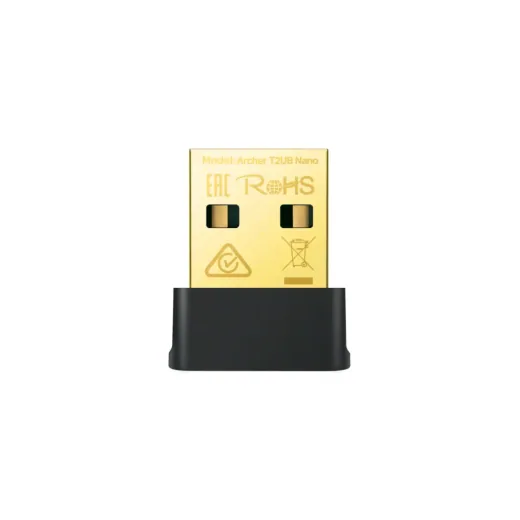
Tarjeta de Red USB Wifi TPLINK Archer T2UB Nano AC600 Dual Band + Bluetooth N/DL 415En Sycom Switch 5 Puertos 10/100/1000 Mbps Tp-Link P/Escritorio Tl-Sg1005dL 405En Acosa
Switch 5 Puertos 10/100/1000 Mbps Tp-Link P/Escritorio Tl-Sg1005dL 405En Acosa Router Linksys HYDRA-6 2000 Pies CobertuL 2,995En Lady Lee
Router Linksys HYDRA-6 2000 Pies CobertuL 2,995En Lady Lee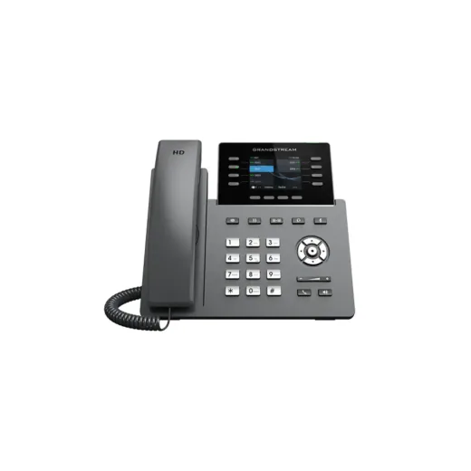
Telefono IP Grandstream GRP2624 8 Lineas POEL 2,995En Sycom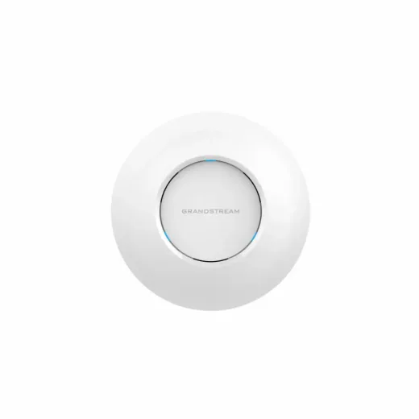
Access Point Grandstream GWN7625L 2,995En Sycom Switch 8 Puertos 10/100 Mbps Tp-Link P/Escritorio Tl-Sf1008dL 395En Acosa
Switch 8 Puertos 10/100 Mbps Tp-Link P/Escritorio Tl-Sf1008dL 395En Acosa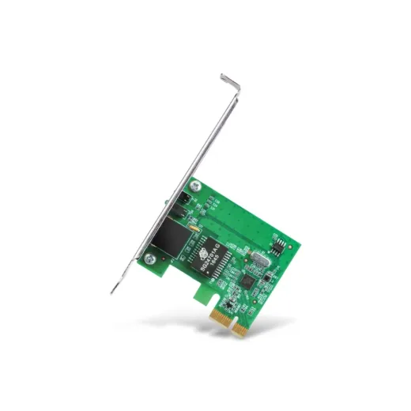
Tarjeta de Red PCIE Gigabit X1 TPLINK TG-3468L 395En Sycom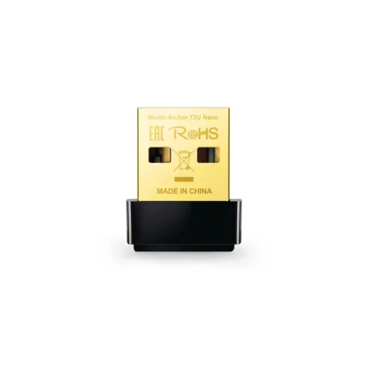
Tarjeta de Red USB Wifi TPLINK Archer T2U Nano AC600 Dual Band N/DL 380.01En Sycom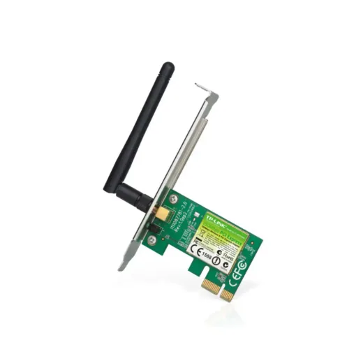
Tarjeta de Red PCIE Wifi TPLINK TL-WN781ND 150MbpsL 380.01En Sycom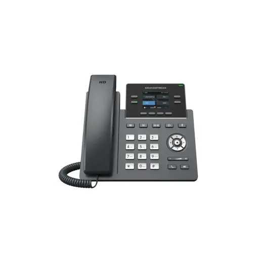
Telefono IP Grandstream GRP2612W 2 LineasL 3,200En Sycom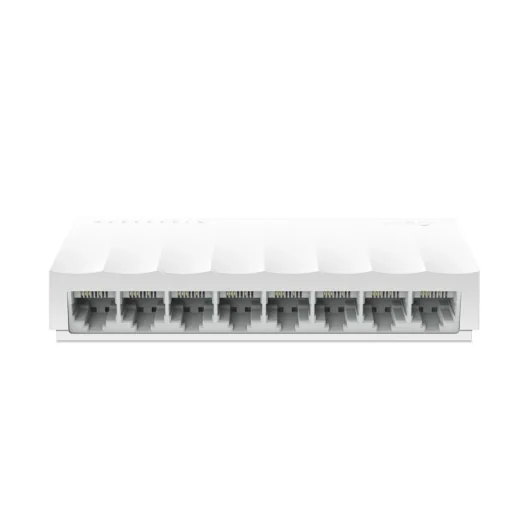
Switch 8 Puertos 10/100 Mbps Tp-Link Para Escritorio Ls1008L 345En Acosa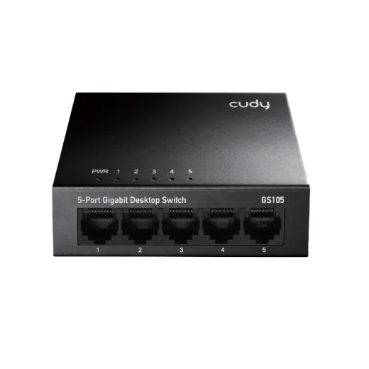
Switch 5 Puertos 10/100/1000 Mbps Cudy Gigabit Metal Gs105L 345En Acosa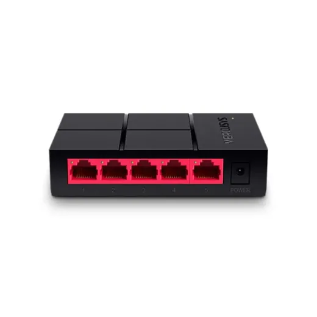
Switch 5 Puertos 10/100/1000 Mbps Mercusys P/Escritorio Ms105gL 345En Acosa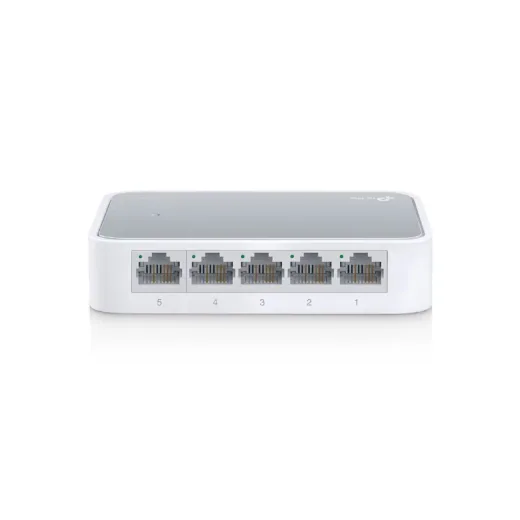
Switch 5 Puertos 10/100 Mbps Tp-Link P/Escritorio Tl-Sf1005dL 345En Acosa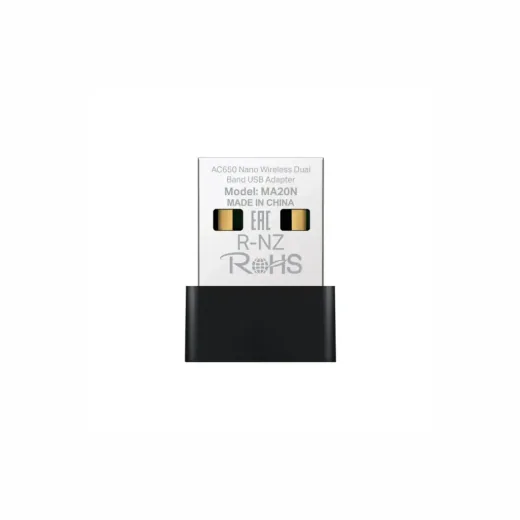
Tarjeta de Red USB Wifi MERCUSYS MA20N Dual BandL 345En Sycom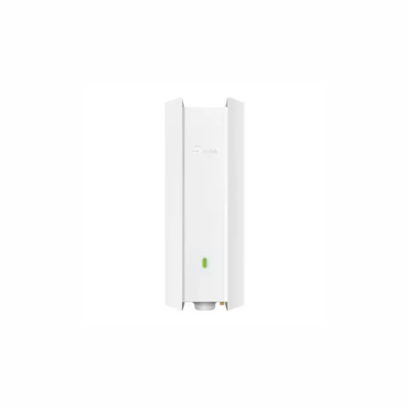
Access Point TPLINK MU-MIMO AX3000 EAP650 Omada Exterior/Interior Wifi 6L 3,695En Sycom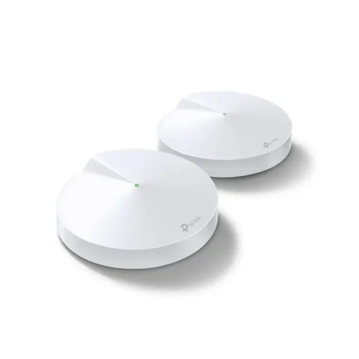
Router TPLINK Mesh Deco M5 AC1300 (2 Pieza)L 3,795En Sycom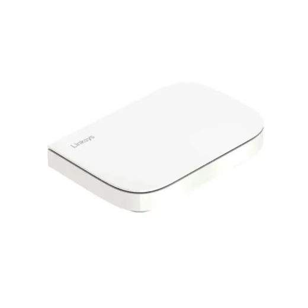
Router Inalambrico Linksys LN1101 Velop Micro 6 Mesh AX3000 Dual BandL 3,995En Sycom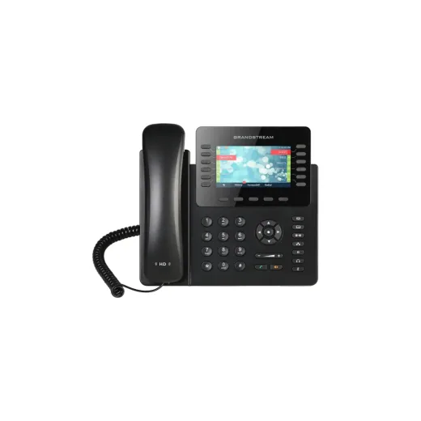
Telefono IP Grandstream GXP2170 Small Business LCD 4.3" ColorL 4,000En Sycom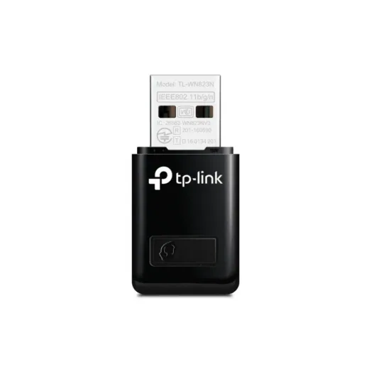
Tarjeta de Red USB Wifi TPLINK TL-WN823N Mini 300Mbps N/DL 300En Sycom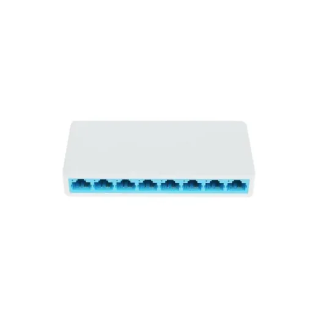
Switch 8 Puertos 10/100 Mbps Mercusys P/Escritorio Ms108L 295En Acosa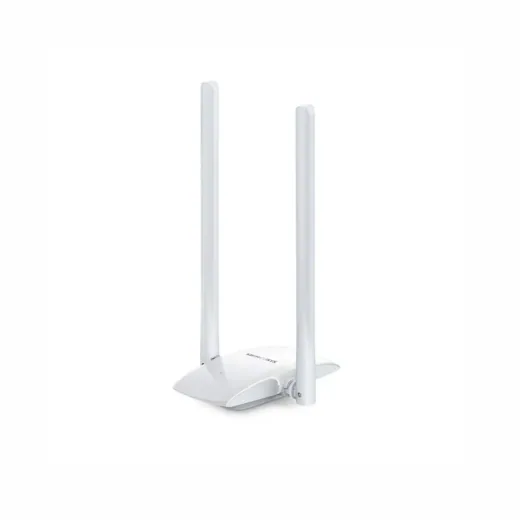
Tarjeta de Red USB Wifi MERCUSYS MW300UH 300mbps 5dBi 2.4GhzL 295En Sycom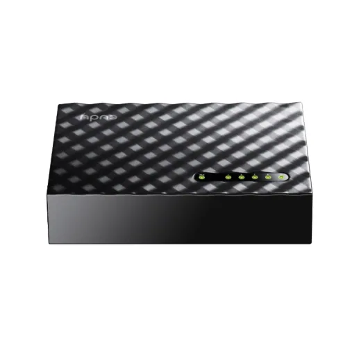
Switch 5 Puertos 10/100/1000 Mbps Cudy P/Escritorio Gs105dL 290En Acosa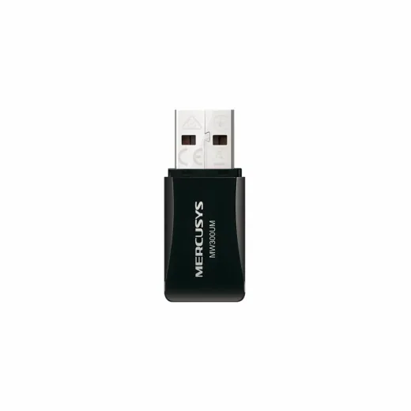
Tarjeta de Red USB Wifi Mercusys MW300UM N300 300mbpsL 290En Sycom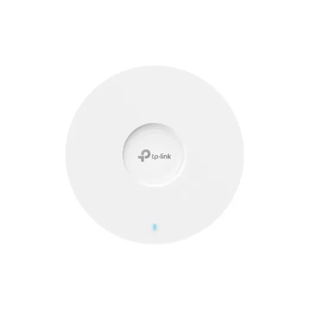
Access Point TPLINK EAP620 AX1800 Omada HD Wifi 6L 4,195En Sycom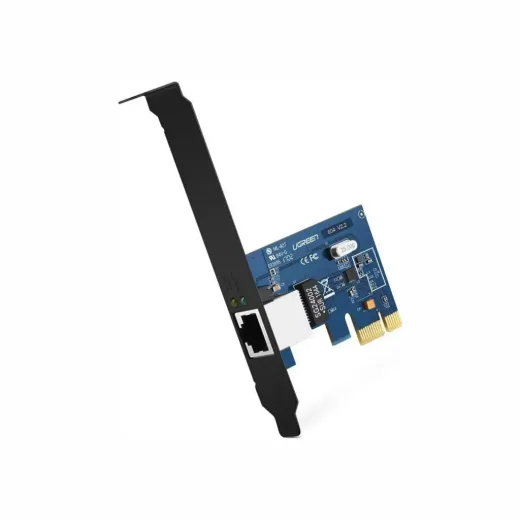
Tarjeta de Red PCIE Gigabit X1 Ugreen 30771L 287.5En Sycom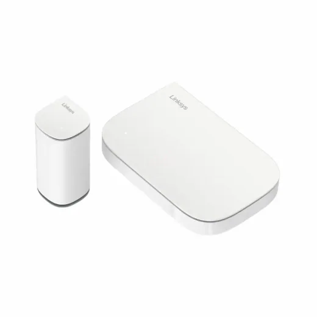
Router Inalambrico Linksys LN11011201 Velop Micro 6 Mesh AX3000 Dual Band 2PKL 4,295En Sycom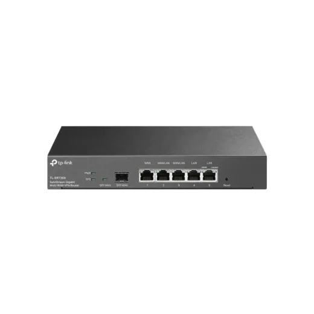
Router VPN TPLINK TL-ER7206 OMADA SafeStreamL 4,500En Sycom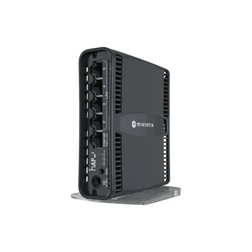
Router Mikrotik hAP ax2 Wi-Fi6 5 puertos Gigabit C52iG-5HaxD2HaxD-TCL 4,542.5En Sycom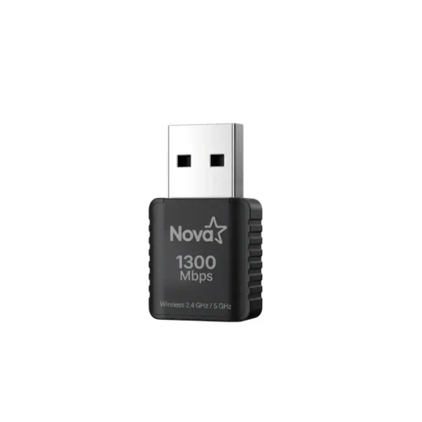
Adaptador USB Wifi Nova UWF-908 1300Mbps Dual Band 5G 2.4G E010-174L 260En Sycom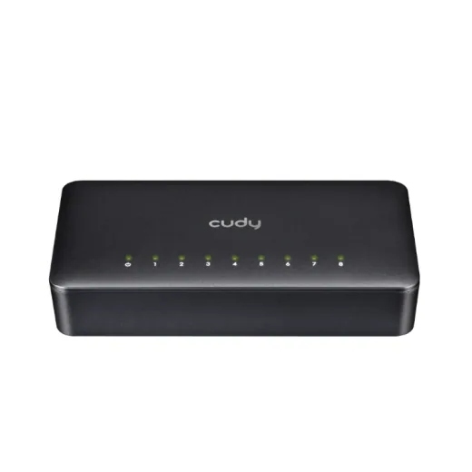
Switch 8 Puertos 10/100 Mbps Cudy P/Escritorio Fs108DL 245En Acosa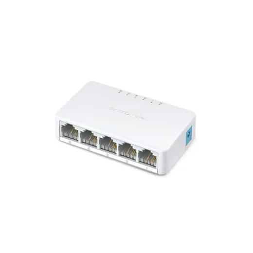
Switch 5 Puertos 10/100 Mbps Mercusys P/Escritorio Ms105L 245En Acosa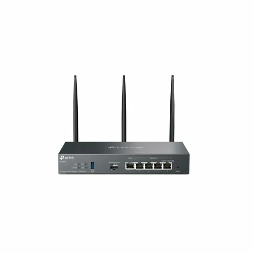
Router Vpn Tplink ER706W Omada AX3000L 4,950En Sycom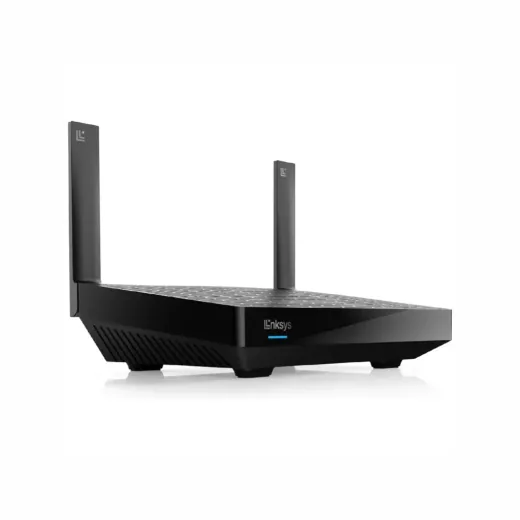
Router Inalambrico Linksys Pro6 LN3121-LA AX5400 Dual Band Wifi 6L 4,995En Sycom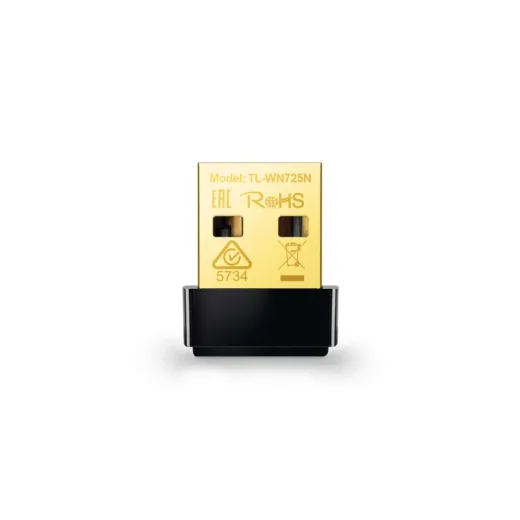
Tarjeta de Red USB Wifi TPLINK TL-WN725N N 150MbpsL 230En Sycom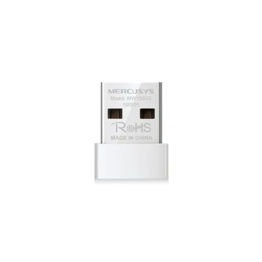
Tarjeta de Red USB Wifi MERCUSYS MW150US 150 MbpsL 230En Sycom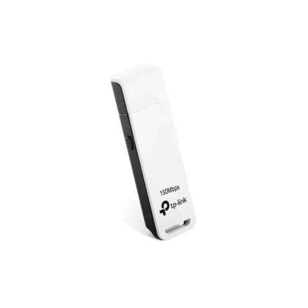
Tarjeta de Red USB Wifi TPLINK TL-WN727N 150 Mbps 2.4GhzL 230En Sycom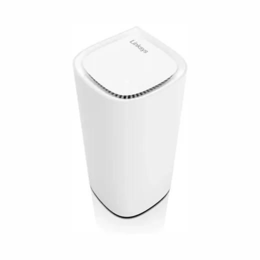
Router Wifi Linksys Velop Pro 6E MX6201 1PackL 5,295En Sycom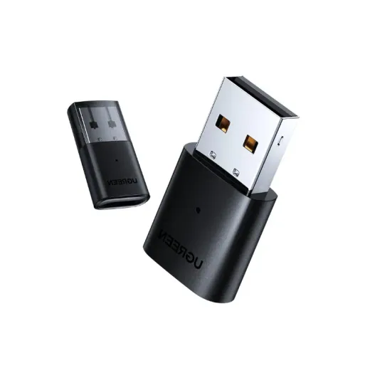
Adaptador Bluetooth Usb 5.0 Cm390 UgreenL 222.5En Acosa Adaptador Bluetooth Usb 5.4 Nano Tp-Link Ub500L 218.99En Acosa
Adaptador Bluetooth Usb 5.4 Nano Tp-Link Ub500L 218.99En Acosa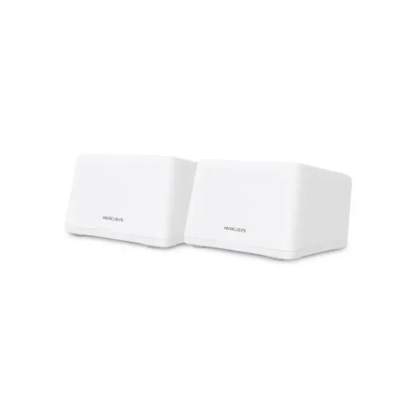
Router Mercusys Mesh Halo H47BE(2-pack) BE9300 Wifi 7L 5,750En Sycom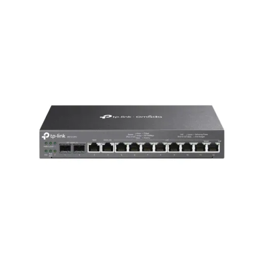
Router Vpn Tplink ER7212PC Omada 3 In 1 PoeL 5,995En Sycom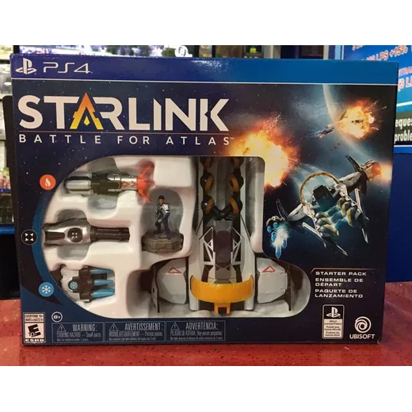
PS4 Starlink Battle for Atlas Starter PackL 200En Game Station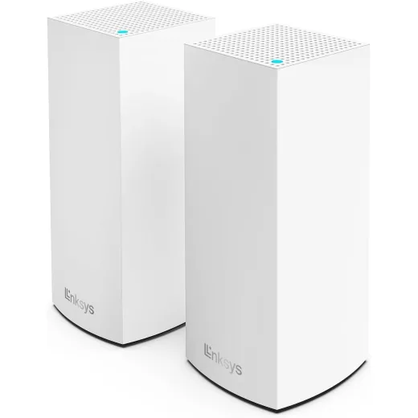
Router Linksys ATLAS-6 Mesh 2 PackL 6,295En Lady Lee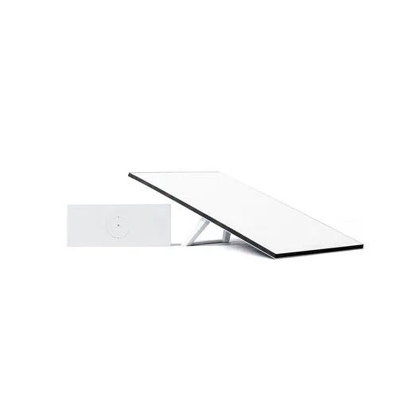
Kit Estandar Starlink/AC/Db/WifisystemL 7,590En Diunsa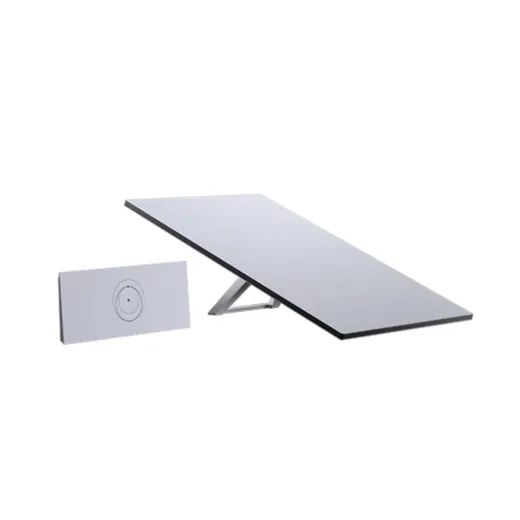
Kit Estandar Starlink/AC/Db/Wifisystem4XL 7,590En Diunsa Switch 16 Puertos 10/100 Mbps Cudy Metal Fs1016L 945En Acosa
Switch 16 Puertos 10/100 Mbps Cudy Metal Fs1016L 945En Acosa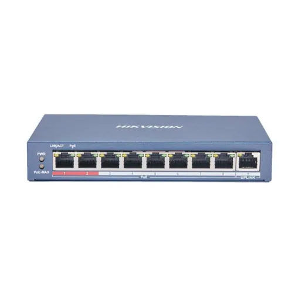
Switch 8 Puertos 10/100 Mbps Con PoE HikvisionL 1,279En Acosa Router Cudy 867Mbps Gigabit 5Ghz Ac1200 Dual BandL 835En Acosa
Router Cudy 867Mbps Gigabit 5Ghz Ac1200 Dual BandL 835En Acosa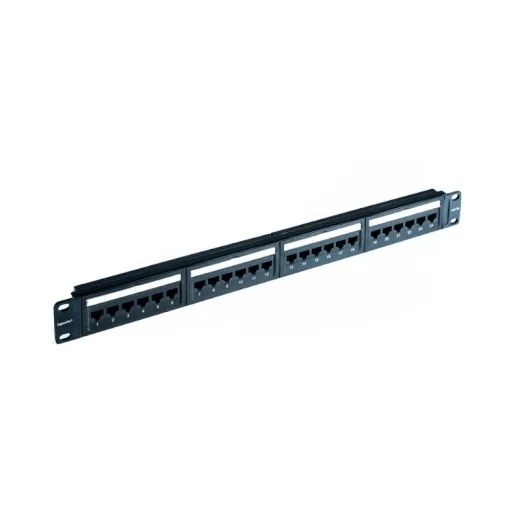
Patch Panel Cat 6 24Pto Gigabit Ethernet 10/100/1000 NitrotelL 2,145En Acosa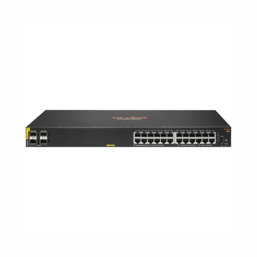
Switch 24 Puertos Aruba HP 6100 JL678A#ABA Gigabit LIQUIDACIONL 26,450En Sycom Switch 5 Puertos Wan/Lan 800mbps Tp-Link Gigabit Tl-Er5120L 2,849En Acosa
Switch 5 Puertos Wan/Lan 800mbps Tp-Link Gigabit Tl-Er5120L 2,849En Acosa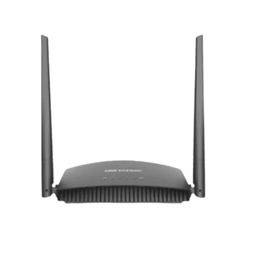
Router Hikvison 300Mbps Inalambrico 2.4Ghz 300M Dual BandL 395En Acosa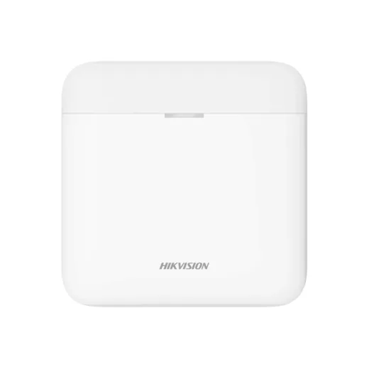
Repetidor De Señal Hikvision Ds-Pr1-WbL 3,119En Acosa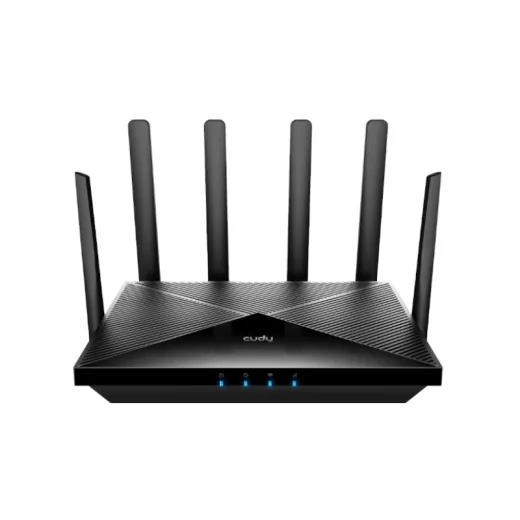
Router Cudy 4G 867Mbps Gigabit 5Ghz Lte-Cat6 Ac1200L 3,215En Acosa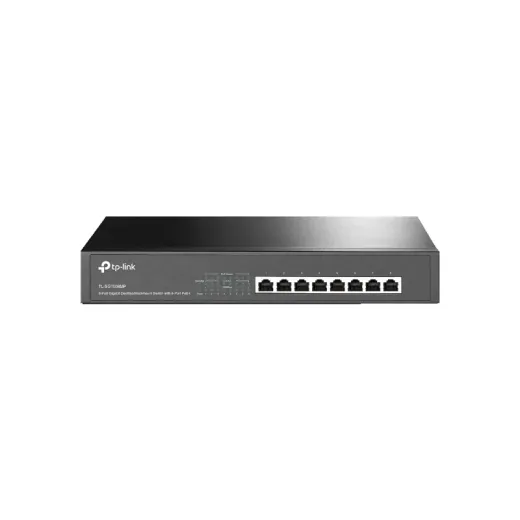
Switch 8 Puertos 10/100/1000 Mbps Poe+ Tp-Link Gigabit Tl-Sg1008mpL 3,649En Acosa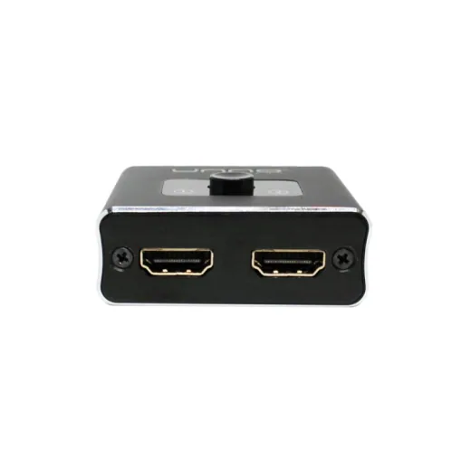
Switch 2 Puertos 4K Hdmi Hb1201Bk UnnoL 315En Acosa- Router Tp-Link 300mbps 4g Lte+Cat6 Tigo Inalambrico 2.4ghz Ac1200L 3,995En Acosa
- Switch 5 Puertos 10/100/1000 Mbps Gigabit RJ45 HikvisionL 295En Acosa